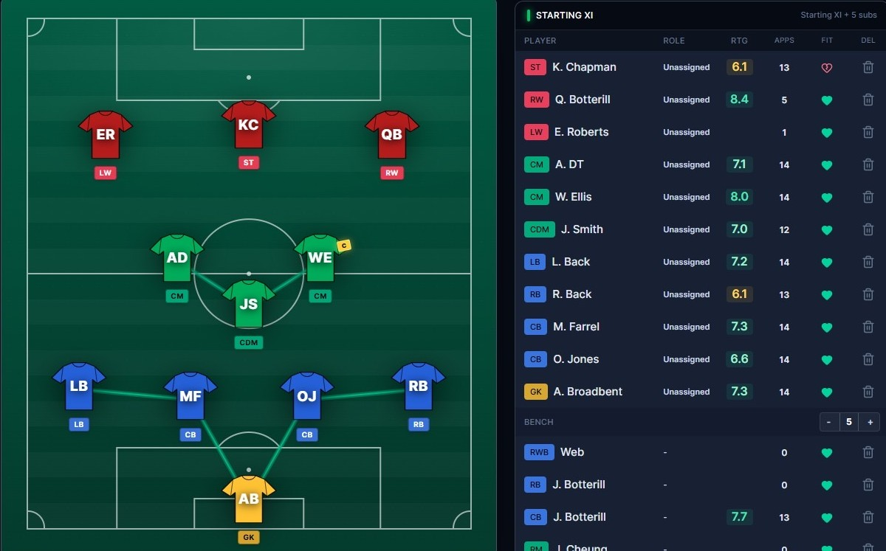

Football Scouting Platform
SquadIQ Project Snapshot
Football squad management platform built through a scout’s eye.

Project Overview
SquadIQ is a football squad management platform built through a scout’s eye. It combines player profiling, role suitability, lineup building and match preparation into one practical system, turning football observation into clearer decisions around selection, structure and player development.
Development Focus
Built to support clearer decision-making for coaches, scouts and grassroots teams by turning scouting information into practical football decisions.
Website
Public platform link for viewing SquadIQ online.